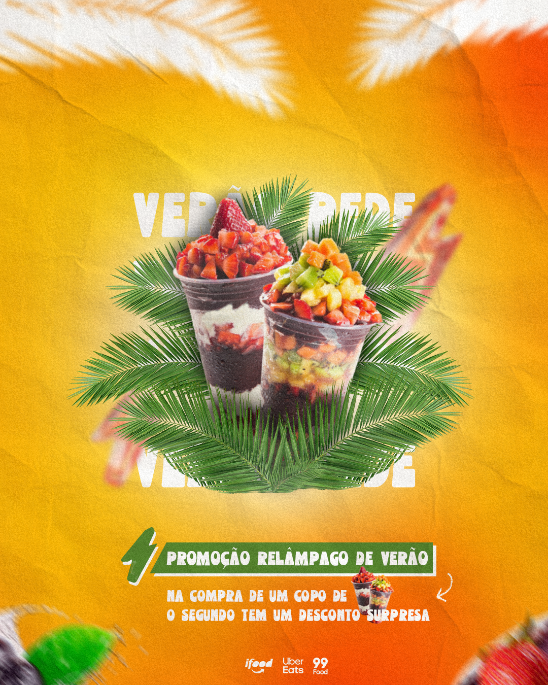

Flyer para Açaíteria – Design Profissional para Divulgar Promoções de Açaí
A divulgação de promoções em uma açaíteria depende muito da apresentação visual. Um flyer profissional pode chamar atenção rapidamente e despertar o interesse do cliente nas redes sociais. Como designer gráfico, desenvolvo flyers criativos para açaíterias que desejam divulgar copos promocionais, combos especiais, novos sabores e campanhas sazonais.

Um design bem planejado valoriza o produto, destaca os diferenciais da promoção e facilita a comunicação com o público. Isso ajuda a aumentar o engajamento nas redes sociais e pode influenciar diretamente nas vendas do estabelecimento.
Design Criativo para Promoções de Açaí
Promoções são muito utilizadas por açaíterias para atrair clientes. Flyers profissionais ajudam a destacar ofertas especiais como copos promocionais, adicionais gratuitos, combos com frutas ou descontos em determinados dias da semana.
O design utiliza cores vibrantes, imagens atrativas de açaí e uma organização visual estratégica que facilita a leitura das informações. Esse tipo de arte desperta desejo no cliente e incentiva o pedido.
Flyer Digital para Redes Sociais
Grande parte da divulgação de açaíterias acontece em redes sociais como Instagram e Facebook. Por isso, o flyer digital é desenvolvido em formatos ideais para essas plataformas.
Uma arte profissional ajuda a destacar o produto no feed e permite que o cliente identifique rapidamente informações importantes como preço, promoções e formas de pedido.
Flyer para Divulgação de Combos de Açaí
Os combos de açaí são muito populares e podem ser divulgados com flyers estratégicos. Esse tipo de arte pode destacar copos grandes, adicionais especiais, acompanhamentos e promoções exclusivas.
Se você quiser ver um exemplo de material visual utilizado nesse tipo de divulgação, também pode conferir esta página sobre flyer para açaí, onde apresento um modelo de arte desenvolvido para esse tipo de negócio.
Material para Impressão e Divulgação Online
Além do flyer digital para redes sociais, também é possível criar materiais prontos para impressão. Flyers impressos podem ser distribuídos em bairros próximos ou utilizados em estratégias de divulgação local.
Quando o design é profissional, o material transmite mais credibilidade e ajuda a fortalecer a imagem da açaíteria no mercado.
Como funciona o processo de criação
1. Envio das informações
O cliente envia as informações da promoção, como tamanho dos copos, sabores, adicionais, preços e outras informações importantes.
2. Planejamento visual
Organizo os elementos do layout de forma estratégica para garantir clareza e impacto visual na divulgação.
3. Criação da arte
Desenvolvo um flyer personalizado utilizando imagens atrativas de açaí, tipografia adequada e cores que destacam a promoção.
4. Ajustes e entrega final
Após aprovação, realizo os ajustes necessários e entrego o material pronto para publicação nas redes sociais ou impressão.
Perguntas Frequentes (FAQ)
Você cria flyers personalizados para açaíterias?
Sim. Cada flyer é desenvolvido de forma personalizada de acordo com as promoções, sabores e identidade visual da açaíteria.
O flyer pode ser usado no Instagram?
Sim. As artes são criadas com proporções ideais para Instagram, Facebook e outras redes sociais.
Posso divulgar combos e adicionais na mesma arte?
Sim. É possível destacar combos de açaí, adicionais e promoções especiais em um único flyer mantendo o layout organizado.
O que preciso enviar para iniciar o projeto?
Envie as informações da promoção, como sabores, tamanhos de copo, adicionais, preços e a logomarca da açaíteria.
Qual é o horário de atendimento?
Atendo de segunda a sábado com suporte até às 22h. Esse horário estendido facilita o contato de donos de açaíteria que muitas vezes organizam promoções e campanhas no período da noite.
Um flyer profissional ajuda a vender mais?
Sim. Um design profissional chama mais atenção nas redes sociais, aumenta o alcance das publicações e ajuda a atrair mais clientes para o estabelecimento.
Solicite seu Flyer para Açaíteria
Se você deseja divulgar promoções de açaí com um flyer profissional e atrativo, entre em contato para solicitar um orçamento e desenvolver uma arte exclusiva para sua açaíteria.